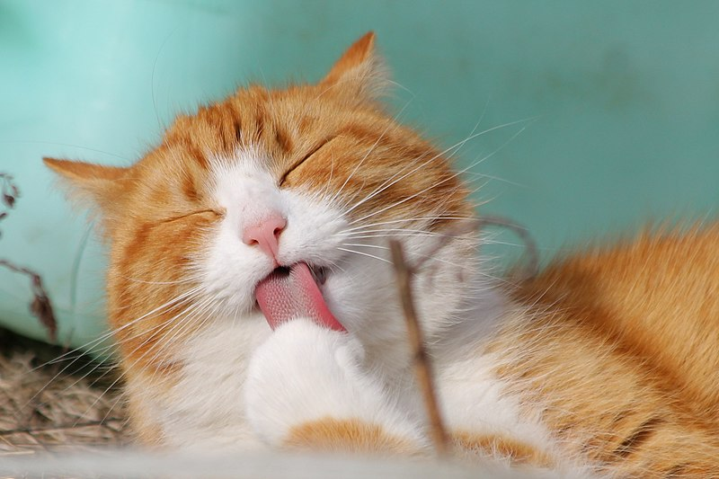

https://commons.wikimedia.org/wiki/File:Cat_grooming.jpg
Cats spend a large amount of time grooming themselves by licking their coats to keep themselves clean, and they are naturally suited to cleaning themselves; they have a rough tongue which is naturally suited to cleaning their fur, paws they can manuever around hard-to-reach areas, and teeth to dig out the deepest dirt.
Cleaning serves other purposes than just cleaning themselves, as it is a social activity as well. This is called allogrooming and it is a way for cats to form friendships and soothe others in a clowder.
(fun fact: a group of cats is called a clowder)